I previously upgraded my laptop from Fedora 22 to Fedora 23 after F22 had been in its End of Life state for over six months. Notably, you can efficiently reuse partitions originally configured for F22, ensuring they seamlessly accommodate the installation of the new Fedora release while preserving all files within the Logical Volume designated as /home.
In this post, I'll guide you through achieving this without compromising the integrity of our data or other operating systems installed on your Desktop/Laptop.
As discussed in the earlier post, while upgrades are an option, I'm personally inclined towards fresh installs. Resetting everything to its prior state brings a sense of satisfaction. Moreover, it places less strain on the computer, downloading only the essential packages for a functional system. Additional software can be installed on demand later.
Once a proper backup of all our system files is secured, we can embark on the installation process without the nagging fear of the unknown. After all, you never truly know what could go wrong until it does – that's the beauty of it! XD
Creating an Installation Media
Our initial step involves crafting an installation medium, and to kickstart this process, we need to download the Fedora 25 ISO file. For consistency, I've been relying on the netinstall image since Fedora 21, as highlighted in Chapter 2 of the Fedora Installation Guide.
The netinstall image boots directly into the installation environment, and uses the online Fedora package repositories as the installation source. With a netinstall image, you can select a wide variety of packages to create a customized installation of Fedora.
The Fedora Server netinstall image is a universal one, and can be used to install any Fedora flavor or your own set of favorite packages.
Downloading the image Everything netinstall
I prefer utilizing the netinstall ISO image of Fedora Everything.
Unfortunately, it seems that the Everything netinstall image lacks a torrent seeder for download, as indicated by the absence on the Fedora torrent page. As a result, we'll have to resort to the conventional method of direct download, and for this, we'll leverage the command line.
For 32-bit systems, employ the following command to download the image:
wget -N -t 0 -c https://download.fedoraproject.org/pub/fedora/linux/releases/25/Everything/i386/iso/Fedora-Everything-netinst-i386-25-1.3.iso
For 64-bit systems, employ the following command to initiate the image download:
wget -N -t 0 -c https://download.fedoraproject.org/pub/fedora/linux/releases/25/Everything/x86_64/iso/Fedora-Everything-netinst-x86_64-25-1.3.iso
Here's a breakdown of the command options:
-N ensures the downloaded file retains the original time and date stamp from its initial upload to the servers.
-t 0 serves as a safety net; if the download encounters connectivity issues, it will automatically attempt to reconnect. Leaving the time at 0 ensures an immediate reconnection.
-c signals that the download should resume from the byte where it was left pending in case of interruptions. This precaution is particularly useful for scenarios with less stable network connections.
This provides a small contingency measure in the event of an unstable network.
Additionally, we can verify the integrity of the downloaded image using the checksum file. Simply download the checksum file and save it in the same directory as the ISO image:
wget -N -t 0 -c https://alt.fedoraproject.org/es/static/checksums/Fedora-Everything-25-1.3-x86_64-CHECKSUM
Next, execute the following command:
sha256sum -c Fedora-Everything-25-1.3-x86_64-CHECKSUM
Writing the ISO image on a USB
To write the ISO image onto a USB drive, we'll employ the Fedora Media Writer tool. If you're on Windows, you can install Fedora Media Writer using the following link:
https://getfedora.org/fmw/FedoraMediaWriter-win32-4.0.7.exe
For MacOS users, the link is:
https://getfedora.org/fmw/FedoraMediaWriter-osx-4.0.7.dmg
If you're using Fedora 23 or a later version, you can install Fedora Media Writer with the following command:
su -c 'dnf install mediawriter'
Before launching Fedora Media Writer, it's recommended to disconnect any removable storage devices currently plugged into your system. This precaution helps avoid potential confusion. Once that's done, connect the USB memory you intend to use and proceed to run Fedora Media Writer.
The steps are straightforward:
- Choose "Custom image."
- Navigate to the directory where the ISO image was downloaded.
- Select the USB drive.
- Click on Write to disk.
- Enter your user password if you belong to the wheel group, or provide the root password if you are not in the admins group.
- That's it!
Booting from USB
In configuring my laptop, I've set it to start up in UEFI mode while keeping the trusty Secure Boot feature engaged.
When crafting the installation media using Fedora Media Writer, it serves as a reliable assurance that it'll seamlessly adapt to various scenarios.
To access the Boot Manager on my laptop, a simple press of the Enter key during the appearance of the Lenovo logo is indicative of the system's initiation in UEFI mode.
Starting the Fedora 25 Installation Process
In this section of the post, I'll provide screenshots along with brief descriptions.
Let's start with the Internet connection.
The installation media created from netinstall images relies solely on an Internet connection, which can be established either through a wired connection via the RJ45 port (Ethernet) or wirelessly using our WiFi card. In my case, the netinstall setup effortlessly detects both network cards. Fedora netinstall includes a range of drivers that enable the utilization of certain network cards. If your network card isn't detected, it may be due to the device not being supported by Fedora, typically for legal reasons. Fedora strictly incorporates FLOSS (Free/Libre and Open Source Software) drivers or drivers whose manufacturers explicitly outline their terms of use and distribution policy.
My T440p is equipped with an Intel® Ethernet Wired Network Card Connection I217-LM and an Intel® Wireless-N 7260 Wireless Network Card. During installation, both cards were promptly detected. As I have access only to WiFi networks in the office, I opted to use the Wireless card.
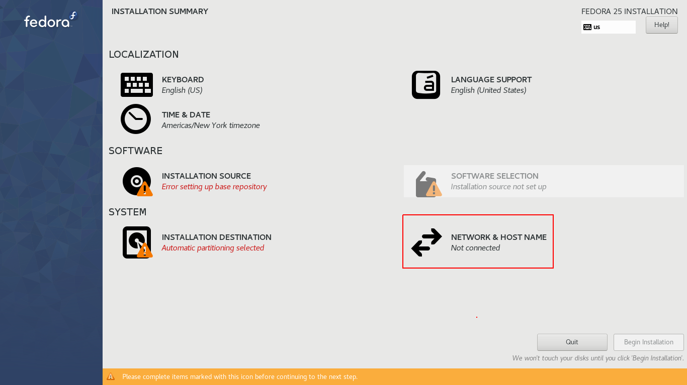In this initial image of the installation summary, our first step is to establish a connection to any of the available networks, be it through a wired or WiFi network. To achieve this, click on NETWORK & HOST NAME.
Next, choose Wireless and enable the corresponding network card. From the list of available networks, select one, alter the name of your Desktop/Laptop as desired, and then click Apply...
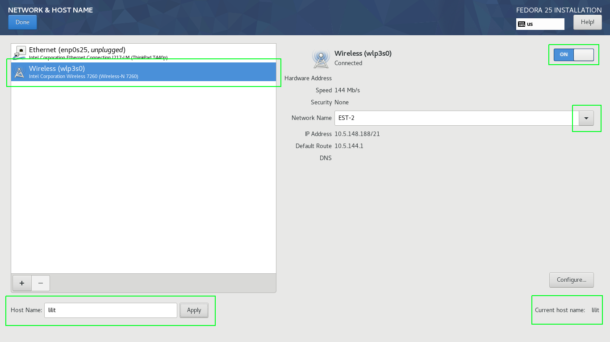Click Done.
In the LOCALIZATION section, I included the option for French (International, AltGr dead keys) while removing English (US).
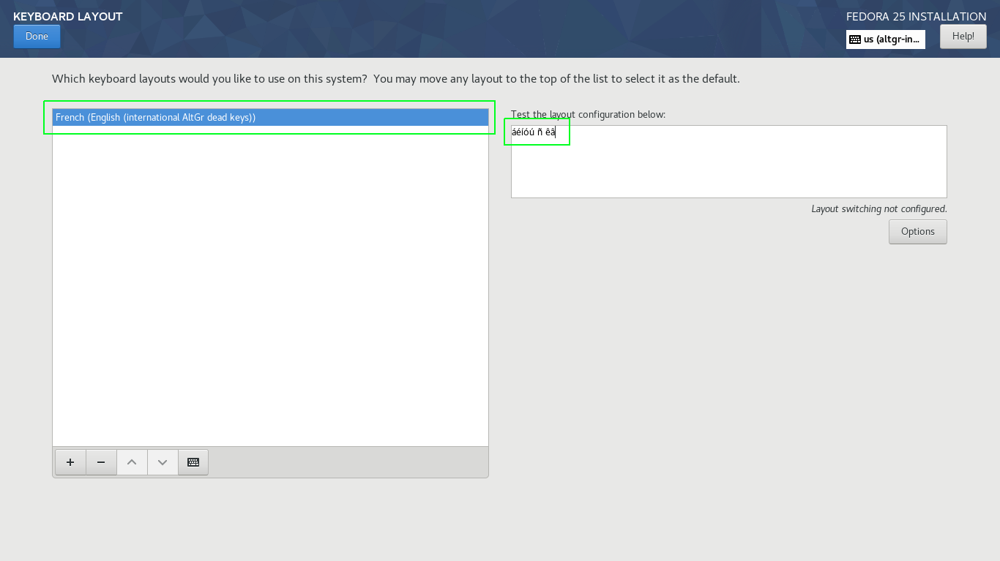You can perform a quick test by pressing the AltGr + a key and other vowels to observe the accentuated vowels.
In the TIME & DATE section, I consistently enable Network Time...
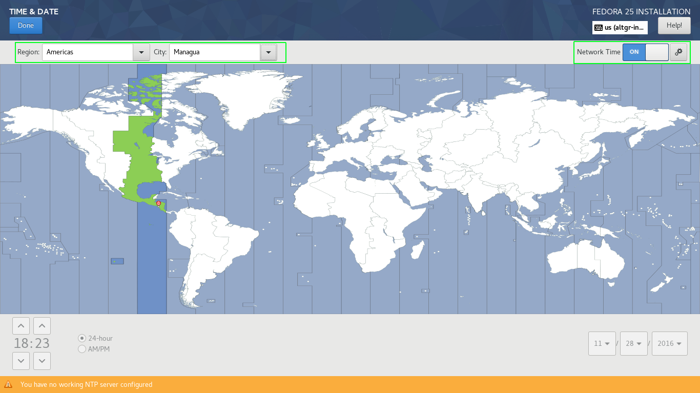Additionally, we choose our Region and City, and based on this selection, the time and date are automatically set.
So far, we've configured the following sections:
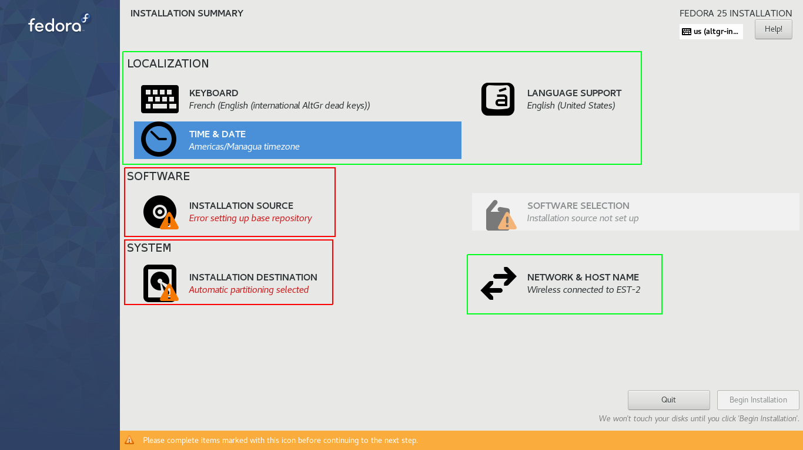Now, let's proceed to configure the SOFTWARE section, focusing on the INSTALLATION SOURCE...
In this section, we check On the Network: and choose Closest mirror. Additionally, ensure to uncheck the Updates option...
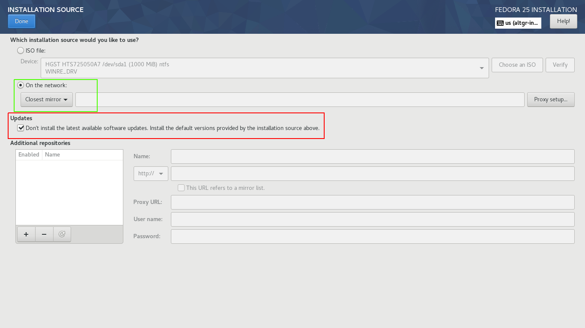This setup ensures that the installer utilizes online repositories to download the necessary packages for installation. It dynamically selects the nearest server, which may not necessarily be the closest geographically but is typically the most efficient with optimal data transfer times.
By leaving Updates unchecked, we instruct the installer to deploy the latest available packages from the repository.
We patiently wait for the download of package group metadata as the SOFTWARE SELECTION section depends on this step.
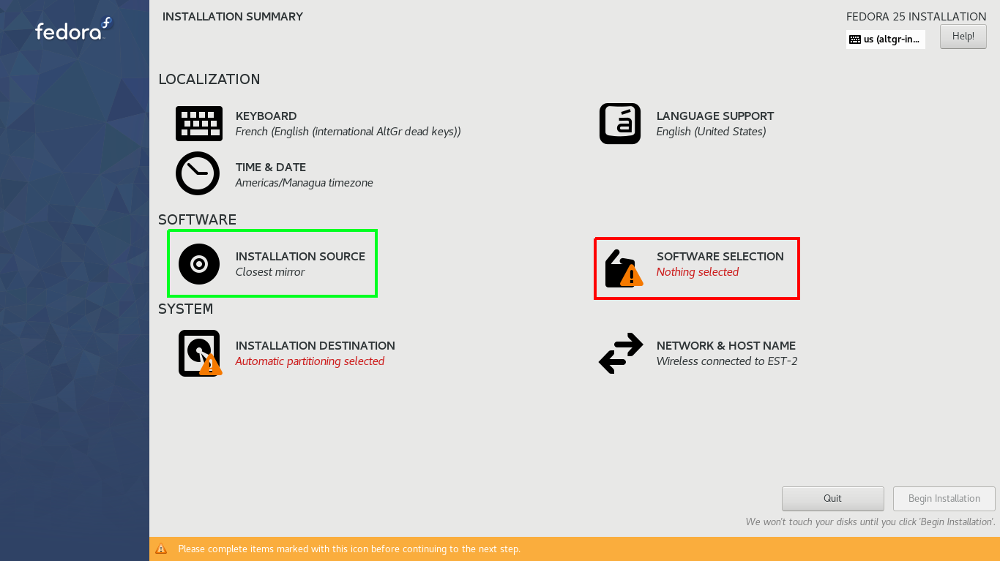In the SOFTWARE SELECTION section, I opted for Fedora Custom Operating System, representing a minimal package selection. This choice excludes a graphical environment, including only a few essential package groups, such as:
Environment Group: Fedora Custom Operating System
Environment-Id: custom-environment
Description: Basic building block for a custom Fedora system.
Mandatory Groups:
Core
Optional Groups:
Guest Agents
Standard
Finally, we've arrived at the SYSTEM section. Choose INSTALLATION DESTINATION. Under Device Selection, in Local Standard Disk, select the hard disk containing the existing Fedora installation with the partitions you wish to reuse.
In the Other Storage Options section, within the Partitioning category, select I will Configure partitioning.
The subsequent menu is displayed below, where we'll click on Unknown:
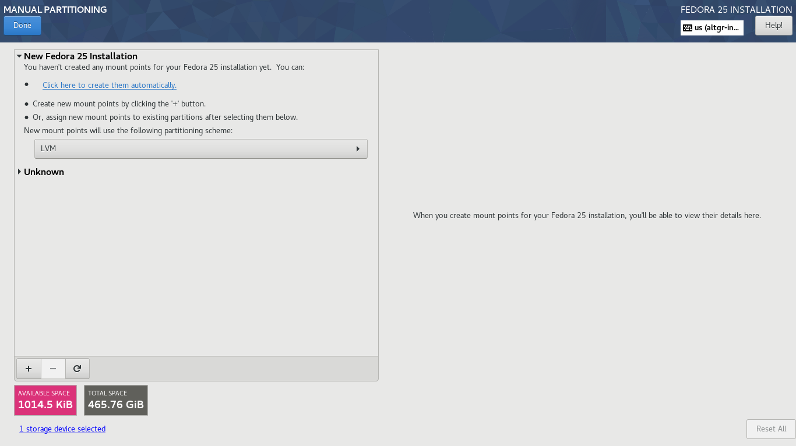
Once we click Unknown the other existing partitions will be displayed. we will focus on the partitions sda2, sda9 and sda10:
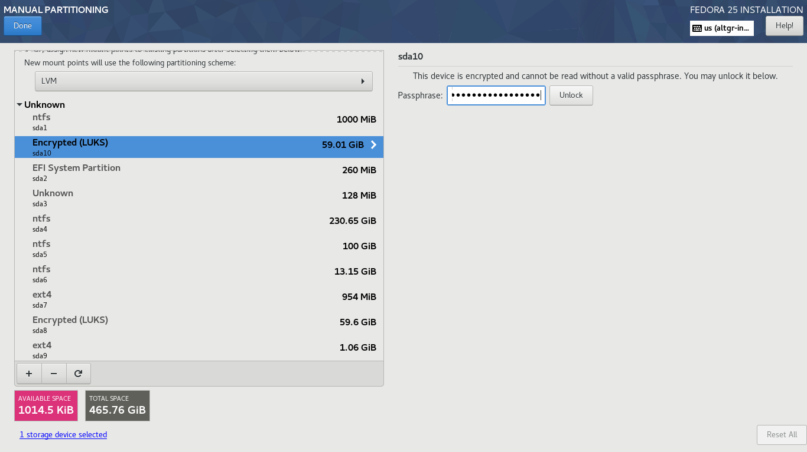
Here's a detailed breakdown:
sda2: This is the ESP (EFI System Partition), housing other *.efi files. Each OS installed in UEFI mode has an *.efi file linked to our GRUB. It enables us to choose the OS during the initial seconds after turning on our computer. Never mark this partition for formatting. sda2 will be mounted on /boot/efi.
sda9: This partition will be mounted in /boot and should not be encrypted. It contains crucial files needed for the OS to load, such as the kernel. Encrypting this partition would prevent the loading of kernels during boot.
sda10: This partition is encrypted using LUKS and houses the Volume Group, which, in turn, contains other logical volumes serving as /, /home, and swap.
Once sda10 is selected, you'll be prompted for the encryption password granting access to the Volume Group, which includes the mentioned partitions. This section reflects the existing Fedora 23 installation, originally the F22 that we updated in the previous post.
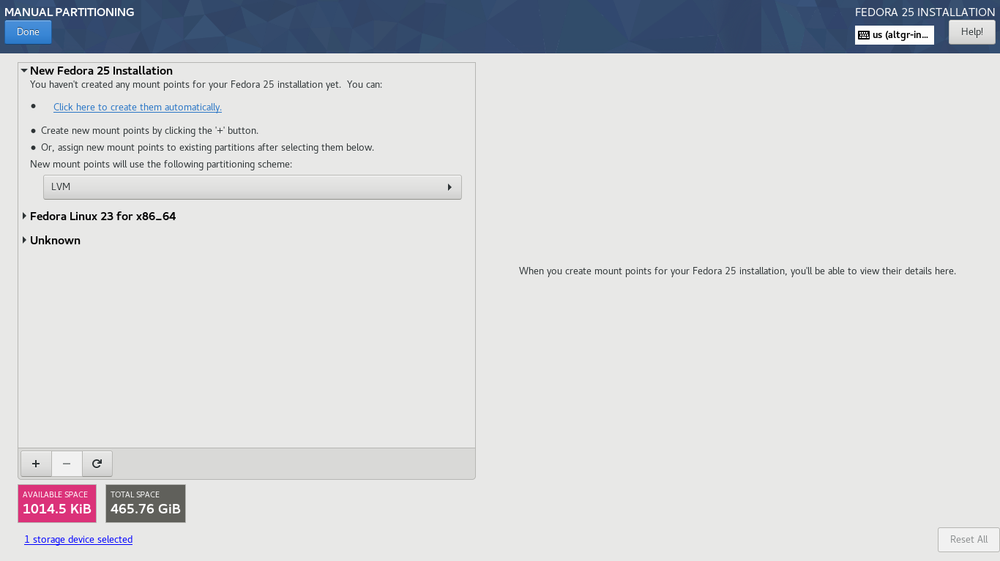Click on Fedora Linux 23 for x86_64, and you'll be able to view the logical volumes slated for reuse.
When selecting /home, ensure to allocate a Mount Point for this Logical Volume. Make certain that the Reformat checkbox is not selected, then click on Update Settings.

In the subsequent image, you'll observe that the logical volume fedora_lilit-home has been reallocated to the New Fedora 25 Installation.
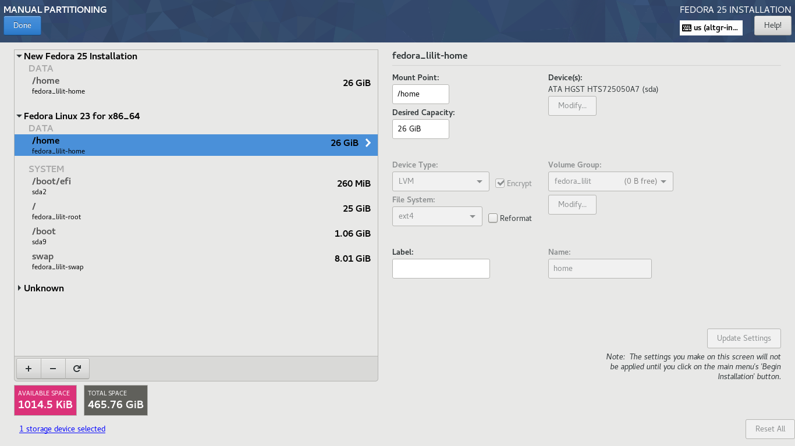Choose /boot/efi, equivalent to the ESP partition located in sda2. Ensure to assign a Mount Point for this Logical Volume, which, in this case, would be /boot/efi. Confirm that the checkbox Reformat is not selected, then click on Update Settings.
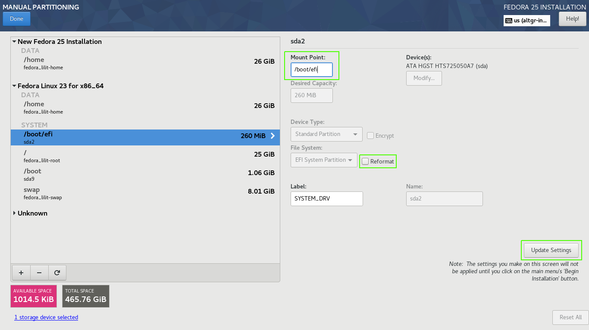Choose /. This logical volume previously served as the / for F23, so for reuse, we need to mark it for formatting. Assign / as the mount point, select the file system as ext4, ensure that the checkbox Reformat is marked, and then click on Update Settings.
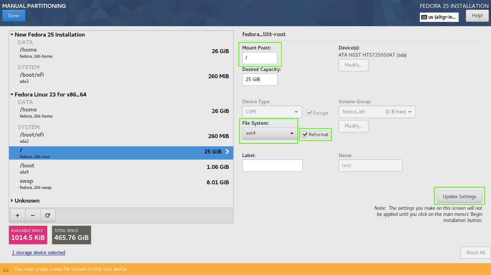Select swap, mark the checkbox and click Update Settings.

Opt for /boot. This is where the F23 kernels were stored, so to repurpose this partition, formatting is necessary. Allocate the Mount Point as /boot, check the Reformat option, specify the file system as ext4 (in my case), and click on Update Settings.
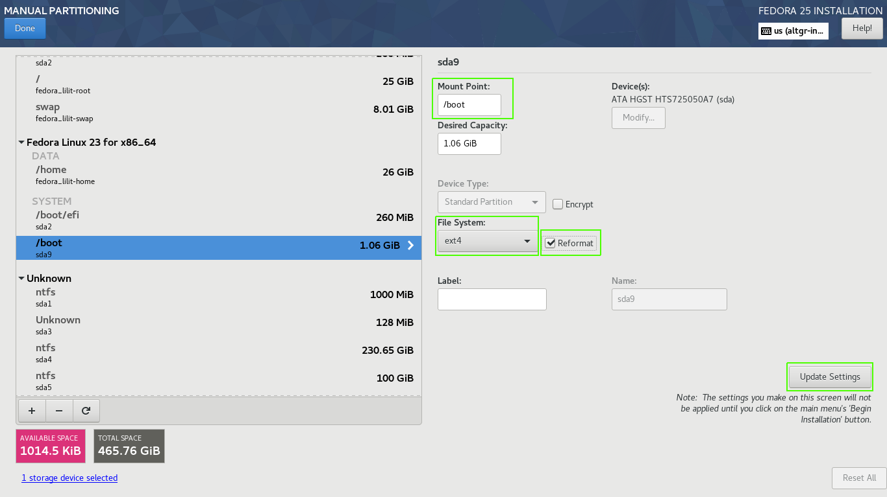Click on Done and confirm the impending changes.
To conclude, simply click on Begin Installation.
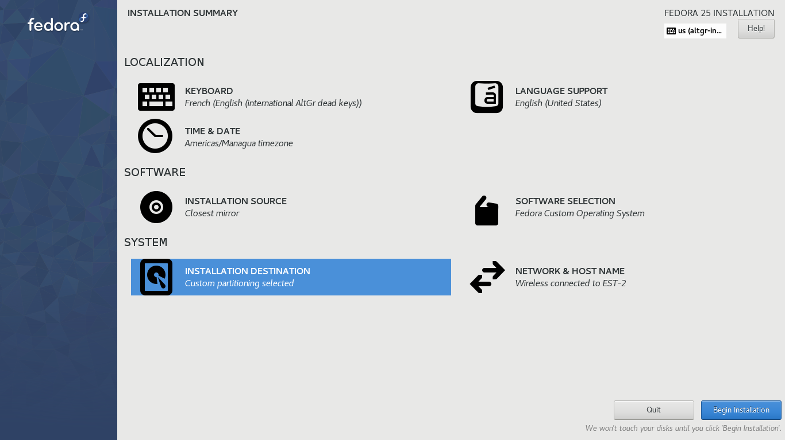Assign both a user password and a ROOT password. Now, patiently wait for the download and installation of the packages to complete.
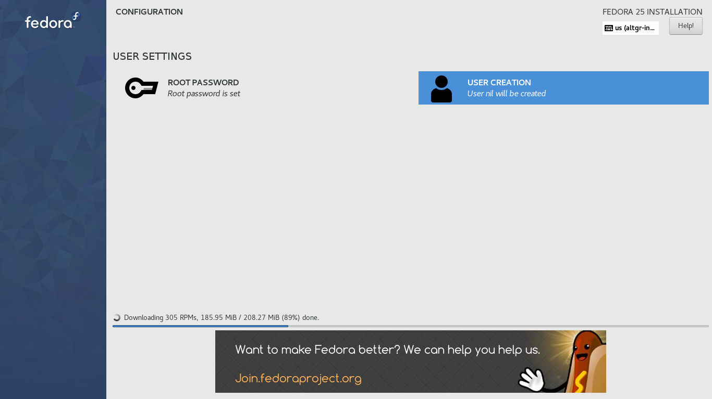Once everything is set, click on Reboot.
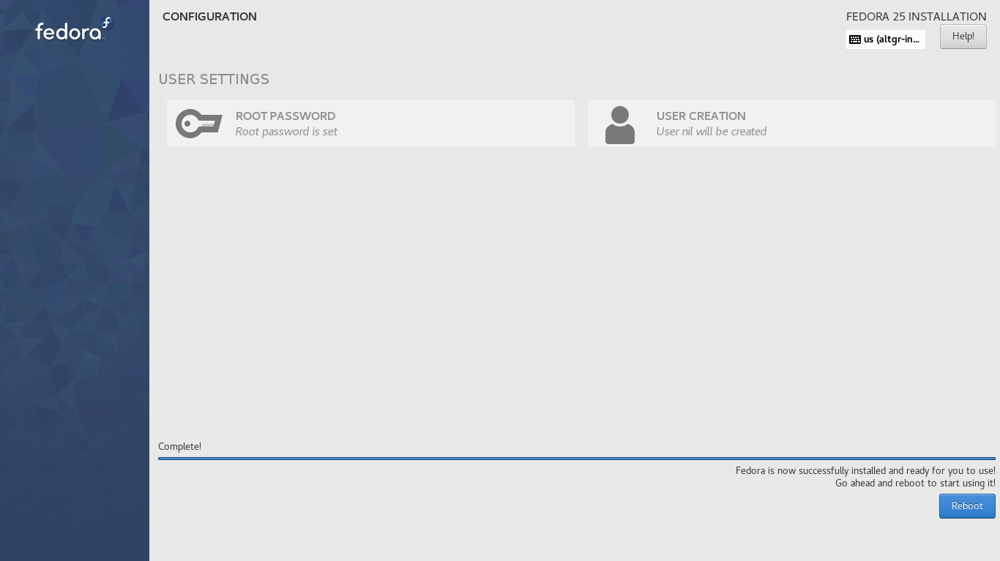In my case, I had to perform a series of post-installation steps, which I'll elaborate on in the next post.